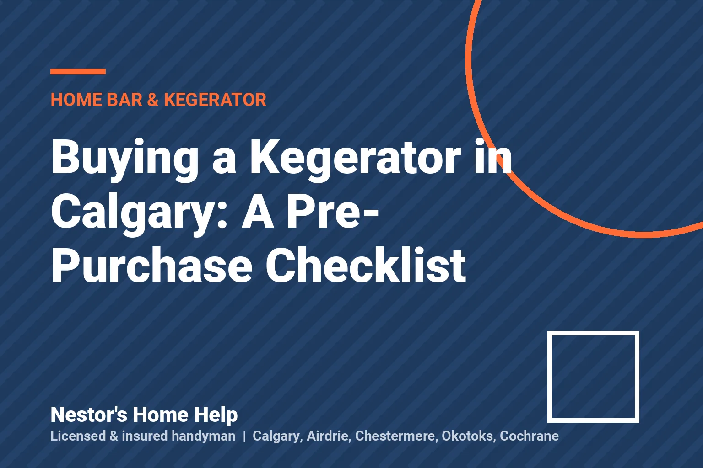

Buying a Kegerator in Calgary: A Pre-Purchase Checklist
By Vitalii Nestorenko · November 23, 2026 · 5 min read
Before you buy a kegerator, check five things: where it will sit, how much airflow it needs, whether it is rated for that space, how many taps you will actually use, and whether the kegs you want fit inside it. Get those right and the unit will pour well for years. Get them wrong and you are returning a heavy box after the holidays.
Black Friday and Christmas are the busiest weeks of the year for kegerator sales, and most of what I am asked is "which one should I get?" I brew beer professionally and install home bars in Calgary, so here is the checklist I would use myself.
1. Decide where it goes before you choose the model
Measure the space first, then shop. Include the door swing, because a kegerator door that hits a wall or a bar stool is an annoyance you will meet every day. Measure the path to the room too. A full-size unit has to get down basement stairs and around corners, which is a common surprise in older Calgary bungalows with narrow stairwells.
Also look at the floor. A full keg is heavy, so the unit should stand level on a solid floor. A wobbly kegerator makes the beer line and tap work harder than they should.
2. Plan for airflow
A kegerator is a refrigerator, and the compressor has to push heat out somewhere. Retailer buying guides agree on the basic point: leave space around the unit for ventilation, because warm air is vented from the back or the front depending on the design. Do not push a freestanding model flush against a wall or into a tight cabinet unless the manual says it is built for that.
Check the manual for the exact clearances. "Built-in" or "front-vent" models are designed to sit inside cabinetry, and ordinary freestanding units are not. If you want the kegerator inside a custom bar, say so when you buy.
3. Indoor or outdoor rating
Most kegerators are made for indoor use. Outdoor-rated models are built with protected wiring and components so they can handle weather. Using an indoor unit outside is hard on the compressor, and it will struggle to hold temperature.
Calgary adds a second concern: cold. A garage or covered patio in January can be well below freezing, and beer freezes only a little below 0 °C. A standard kegerator is meant to cool, not to heat, so in a freezing space the thermostat may behave oddly. Check the manufacturer's stated ambient temperature range. If the space gets that cold, choose a heated or insulated room instead, or a model rated for it.
4. Pick the tap count honestly
A single tap suits most households: one keg, one beer, easy to keep clean. A dual-tap unit lets you serve two beers, and some models hold more than one keg size. But more taps mean more lines to clean and more kegs to keep fresh. If you will drink a keg slowly, two kegs on tap can mean beer sitting longer than you would like.
My advice is to choose the tap count for how you really drink, not for the best-case party. Cleaning is part of owning a kegerator, and I explain how often in my beer line cleaning schedule.
5. Match the unit to the kegs you will buy
Full-size kegerators are built around the half-barrel keg. Many home units take smaller kegs or use adapters, and mini kegs (about 5 litres) exist but are harder to find for the beers people actually want. Before you pay, decide what you will serve and check that the unit fits that keg, with the CO2 cylinder and regulator. My guide to keg sizes in Canada covers which sizes fit which units, and the CO2 pressure guide covers the regulator side.
Commercial, residential or a converted fridge?
Three broad options exist:
- Residential kegerators: affordable, easy to buy and plug in. Fine for typical home use.
- Commercial-grade units: sturdier, usually longer warranties, but larger and more expensive.
- Converted fridges: an existing fridge with a conversion kit. Flexible and cheap, but the donor fridge must be big enough and hold a steady temperature. Reviews note that some conversions swing in temperature, which shows up in the glass as foam.
None of these is "best". The right one depends on space, budget and how often you will use it.
What will it cost to run?
Published estimates vary widely with the unit and your electricity rate, so I will not quote a figure. You can work it out yourself: watts, times hours per day the compressor runs, times 365, divided by 1,000, times your price per kWh. The EnergyGuide or spec sheet on the unit gives its yearly kWh.
Pre-purchase checklist
- Measure the space, door swing and the delivery path (stairs, corners).
- Check the manual for ventilation clearance, and whether it can go in cabinetry.
- Confirm the rating suits the room: indoor, outdoor, or cold-space.
- Choose single or dual tap for how you actually drink.
- Check the keg sizes it fits, plus CO2 cylinder space.
- Make sure you can get a CO2 refill nearby.
- Ask what the warranty covers, and who services it in Calgary.
Where I can help
Many people buy the unit and then need help getting it into the room, levelled, and set up. I handle home bar and kegerator installation across Calgary, Airdrie, Chestermere, Okotoks and Cochrane: positioning, tower and line setup, balancing the pour. You can read how I approach the job in my kegerator installation guide. Rates are on the pricing section. Running a new power circuit is not part of what I do; that needs a licensed electrician, and I will say so if your location needs one.
FAQ
Can I put a kegerator in my garage in Calgary?
Only if the garage stays within the unit's rated temperature range. Many Calgary garages drop well below freezing in winter, so check the manufacturer's range first.
Do I need a dedicated outlet?
Check the unit's manual. Many plug into a standard household outlet. If you need a new outlet or circuit, hire a licensed electrician.
Is a dual-tap kegerator worth it?
Only if you will finish two kegs while the beer is still fresh. For most households, one tap is easier to keep clean and cheaper to run.
Vitalii Nestorenko is the owner of Nestor's Home Help, a licensed and insured handyman business in Calgary. He holds a Master's degree in mechanical engineering and does every job himself.